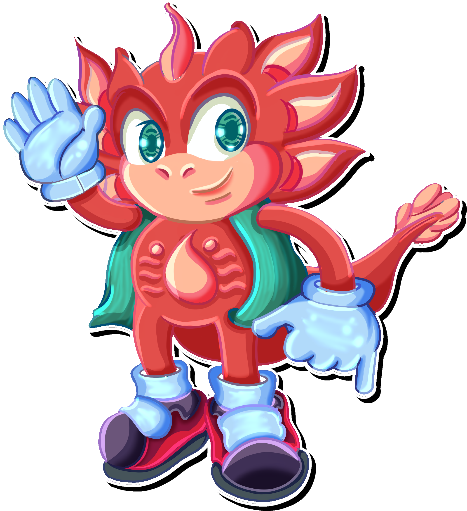

Aprendiz de la Especialidad
Desarollo de Videojuegos
& Entornos Interactivos
Hola, soy Juan Galvis, desarrollador de videojuegos indie.
Y actualmente estoy diseñando Psico-Mania.
Un videojuego minimalista que consiste en una serie de microjuegos,
los cuales duran 10 segundos, dando una partida de 1 minuto
basado en "Wario Ware"
